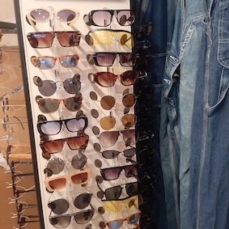

Assortiment

Paspop

Shirts

Bovenkleding

Schoenen
Bodywarmers & vesten
Handgemaakte sieraden

Zonnebrillen
Jassen: de jassen van Bij ons Vintage zijn van stoffen zoals leer. Er is in de winkel een groot schoenen aanbod, dit zijn vooral leren schoenen die langer meekunnen. Schoenen van goede kwaliteit.
Brillen zijn producten die lang meegaan en niet snel beschadigen, daarom heeft Bij ons Vintage een grote collectie aan vintage brillen in de winkel. De meeste sieraden in de winkel zijn handgemaakt dit draagt bij aan het duurzaam maken van artikelen.